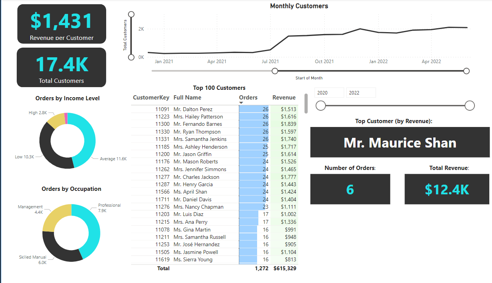

Adventure Works report Using Power BI
In my role as a BI analyst at Adventure Works, I focused on turning raw data into reports and dashboards. This aims to help the management team track KPIs, compare regional performance, analyze product trends, and identify valuable customers, all using Power BI.Data Cleaning, Formatting, and Table Relationships:
- Transforming raw data into clean, well-structured tables using Numeric and Date & Time Tools, merging queries, and removing duplicate data.
- Building the data model, identifying primary keys (PK's) and foreign keys (FK's), establishing relationships, and developing date hierarchies for future reference.
- Crafting a measures table using DAX.
EXECUTIVE DASHBOARD:
- This dashboard delivers a detailed revenue overview, featuring KPI cards, tables, and a range of filtering options.
- All the data is meticulously crafted using DAX and measure tables, guaranteeing data accuracy even when applying filtering.
Map visuals
- A visual representation showcasing the countries within our data model.
product deep dive:
- Use product name filters to access detailed reports on each of the company's products.
Customer deep dive:
- Utilize various segmentations like income or occupation to filter and analyze customer profiles.
